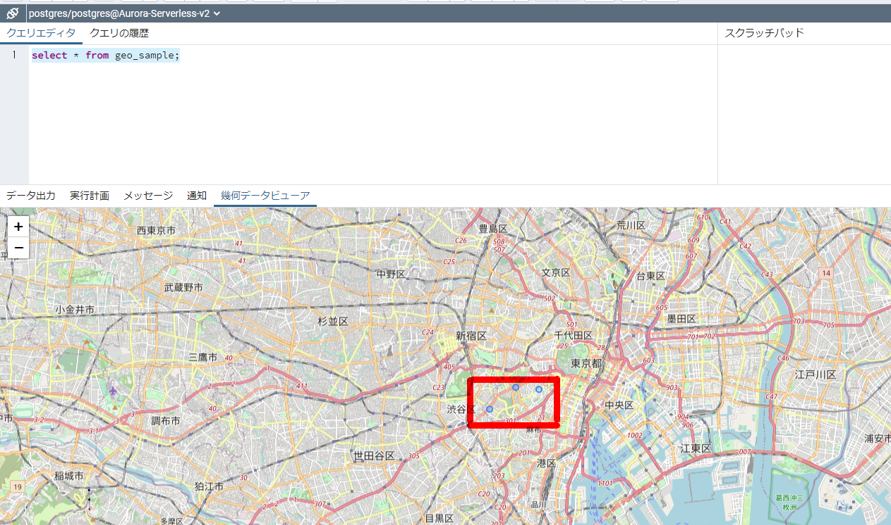

Aurora PostgreSQLでPostGIS(位置情報）を使用する
事前準備
参考資料
拡張機能の有効化
CREATE EXTENSION postgis;
CREATE EXTENSION fuzzystrmatch;
CREATE EXTENSION postgis_tiger_geocoder;
CREATE EXTENSION postgis_topology;
postgres=> CREATE EXTENSION postgis;
CREATE EXTENSION
postgres=> CREATE EXTENSION fuzzystrmatch;
CREATE EXTENSION
postgres=> CREATE EXTENSION postgis_tiger_geocoder;
CREATE EXTENSION
postgres=> CREATE EXTENSION postgis_topology;
CREATE EXTENSION
postgres=>
postgres=>
postgres=> \dx
List of installed extensions
Name | Version | Schema | Description
------------------------+---------+------------+------------------------------------------------------------------------
aws_commons | 1.2 | public | Common data types across AWS services
aws_s3 | 1.1 | public | AWS S3 extension for importing data from S3
fuzzystrmatch | 1.1 | public | determine similarities and distance between strings
pg_buffercache | 1.3 | public | examine the shared buffer cache
pg_stat_statements | 1.8 | public | track planning and execution statistics of all SQL statements executed
plpgsql | 1.0 | pg_catalog | PL/pgSQL procedural language
postgis | 3.1.5 | public | PostGIS geometry and geography spatial types and functions
postgis_tiger_geocoder | 3.1.5 | tiger | PostGIS tiger geocoder and reverse geocoder
postgis_topology | 3.1.5 | topology | PostGIS topology spatial types and functions
(9 rows)
postgres=>
バージョン確認
postgres=> select * from postgis_version();
postgis_version
---------------------------------------
3.1 USE_GEOS=1 USE_PROJ=1 USE_STATS=1
(1 row)
権限変更
ALTER SCHEMA tiger OWNER TO rds_superuser;
ALTER SCHEMA tiger_data OWNER TO rds_superuser;
ALTER SCHEMA topology OWNER TO rds_superuser;
postgres=> \dn
List of schemas
Name | Owner
-------------+---------------
aws_commons | rds_superuser
aws_s3 | rds_superuser
public | postgres
tiger | rdsadmin
tiger_data | rdsadmin
topology | rdsadmin
(6 rows)
postgres=> ALTER SCHEMA tiger OWNER TO rds_superuser;
ALTER SCHEMA
postgres=> ALTER SCHEMA tiger_data OWNER TO rds_superuser;
ALTER SCHEMA
postgres=> ALTER SCHEMA topology OWNER TO rds_superuser;
ALTER SCHEMA
postgres=> \dn
List of schemas
Name | Owner
-------------+---------------
aws_commons | rds_superuser
aws_s3 | rds_superuser
public | postgres
tiger | rds_superuser
tiger_data | rds_superuser
topology | rds_superuser
(6 rows)
postgres=>
rds_superuser ロールにオブジェクトの所有権を転送
ALTER文を生成してくれるので実行。
CREATE FUNCTION exec(text) returns text language plpgsql volatile AS $f$ BEGIN EXECUTE $1; RETURN $1; END; $f$;
SELECT exec('ALTER TABLE ' || quote_ident(s.nspname) || '.' || quote_ident(s.relname) || ' OWNER TO rds_superuser;')
FROM (
SELECT nspname, relname
FROM pg_class c JOIN pg_namespace n ON (c.relnamespace = n.oid)
WHERE nspname in ('tiger','topology') AND
relkind IN ('r','S','v') ORDER BY relkind = 'S')
s;
postgres=> CREATE FUNCTION exec(text) returns text language plpgsql volatile AS $f$ BEGIN EXECUTE $1; RETURN $1; END; $f$;
CREATE FUNCTION
postgres=>
postgres=> SELECT exec('ALTER TABLE ' || quote_ident(s.nspname) || '.' || quote_ident(s.relname) || ' OWNER TO rds_superuser;')
postgres-> FROM (
postgres(> SELECT nspname, relname
postgres(> FROM pg_class c JOIN pg_namespace n ON (c.relnamespace = n.oid)
postgres(> WHERE nspname in ('tiger','topology') AND
postgres(> relkind IN ('r','S','v') ORDER BY relkind = 'S')
postgres-> s;
exec
--------------------------------------------------------------------
ALTER TABLE tiger.loader_variables OWNER TO rds_superuser;
ALTER TABLE tiger.loader_lookuptables OWNER TO rds_superuser;
ALTER TABLE tiger.zip_lookup OWNER TO rds_superuser;
ALTER TABLE tiger.tract OWNER TO rds_superuser;
ALTER TABLE tiger.geocode_settings_default OWNER TO rds_superuser;
ALTER TABLE tiger.tabblock OWNER TO rds_superuser;
ALTER TABLE tiger.county OWNER TO rds_superuser;
ALTER TABLE tiger.bg OWNER TO rds_superuser;
ALTER TABLE tiger.direction_lookup OWNER TO rds_superuser;
ALTER TABLE tiger.pagc_gaz OWNER TO rds_superuser;
ALTER TABLE tiger.geocode_settings OWNER TO rds_superuser;
ALTER TABLE tiger.pagc_lex OWNER TO rds_superuser;
ALTER TABLE tiger.state OWNER TO rds_superuser;
ALTER TABLE tiger.pagc_rules OWNER TO rds_superuser;
ALTER TABLE tiger.secondary_unit_lookup OWNER TO rds_superuser;
ALTER TABLE topology.topology OWNER TO rds_superuser;
ALTER TABLE topology.layer OWNER TO rds_superuser;
ALTER TABLE tiger.place OWNER TO rds_superuser;
ALTER TABLE tiger.zip_state OWNER TO rds_superuser;
ALTER TABLE tiger.zip_state_loc OWNER TO rds_superuser;
ALTER TABLE tiger.state_lookup OWNER TO rds_superuser;
ALTER TABLE tiger.cousub OWNER TO rds_superuser;
ALTER TABLE tiger.street_type_lookup OWNER TO rds_superuser;
ALTER TABLE tiger.edges OWNER TO rds_superuser;
ALTER TABLE tiger.place_lookup OWNER TO rds_superuser;
ALTER TABLE tiger.addrfeat OWNER TO rds_superuser;
ALTER TABLE tiger.county_lookup OWNER TO rds_superuser;
ALTER TABLE tiger.faces OWNER TO rds_superuser;
ALTER TABLE tiger.countysub_lookup OWNER TO rds_superuser;
ALTER TABLE tiger.featnames OWNER TO rds_superuser;
ALTER TABLE tiger.zip_lookup_all OWNER TO rds_superuser;
ALTER TABLE tiger.addr OWNER TO rds_superuser;
ALTER TABLE tiger.zip_lookup_base OWNER TO rds_superuser;
ALTER TABLE tiger.zcta5 OWNER TO rds_superuser;
ALTER TABLE tiger.tabblock20 OWNER TO rds_superuser;
ALTER TABLE tiger.loader_platform OWNER TO rds_superuser;
ALTER TABLE tiger.pagc_lex_id_seq OWNER TO rds_superuser;
ALTER TABLE tiger.county_gid_seq OWNER TO rds_superuser;
ALTER TABLE tiger.state_gid_seq OWNER TO rds_superuser;
ALTER TABLE tiger.place_gid_seq OWNER TO rds_superuser;
ALTER TABLE tiger.cousub_gid_seq OWNER TO rds_superuser;
ALTER TABLE tiger.edges_gid_seq OWNER TO rds_superuser;
ALTER TABLE tiger.addrfeat_gid_seq OWNER TO rds_superuser;
ALTER TABLE tiger.faces_gid_seq OWNER TO rds_superuser;
ALTER TABLE tiger.featnames_gid_seq OWNER TO rds_superuser;
ALTER TABLE tiger.addr_gid_seq OWNER TO rds_superuser;
ALTER TABLE tiger.zcta5_gid_seq OWNER TO rds_superuser;
ALTER TABLE tiger.tract_gid_seq OWNER TO rds_superuser;
ALTER TABLE tiger.tabblock_gid_seq OWNER TO rds_superuser;
ALTER TABLE tiger.bg_gid_seq OWNER TO rds_superuser;
ALTER TABLE tiger.pagc_gaz_id_seq OWNER TO rds_superuser;
ALTER TABLE tiger.pagc_rules_id_seq OWNER TO rds_superuser;
ALTER TABLE topology.topology_id_seq OWNER TO rds_superuser;
(53 rows)
PostGISを使用して実行
テスト①
postgres=> CREATE TABLE t1 (id int primary key);
CREATE TABLE
postgres=>
postgres=> SELECT addGeometryColumn('t1', 'p1', 4326, 'POINT', 2);
addgeometrycolumn
-------------------------------------------
public.t1.p1 SRID:4326 TYPE:POINT DIMS:2
(1 row)
postgres=> \d t1
Table "public.t1"
Column | Type | Collation | Nullable | Default
--------+----------------------+-----------+----------+---------
id | integer | | not null |
p1 | geometry(Point,4326) | | |
Indexes:
"t1_pkey" PRIMARY KEY, btree (id)
postgres=>
postgres=> INSERT INTO t1 VALUES (1, ST_GeomFromText('POINT(139 36)',4326));
INSERT 0 1
postgres=> SELECT id, ST_AsText(p1) FROM t1;
id | st_astext
----+---------------
1 | POINT(139 36)
(1 row)
postgres=>
postgres=>
postgres=> SELECT id,
postgres-> ST_Transform(p1, 32654) <->
postgres-> ST_Transform(ST_GeomFromText('POINT(139.11234 35.998765)', 4326), 32654)
postgres-> AS distance FROM t1 ORDER BY distance ;
id | distance
----+--------------------
1 | 10129.774748121428
(1 row)
テスト②
テーブル作成
CREATE TABLE geo_sample (
id integer PRIMARY KEY,
name varchar(255),
geom geometry(POINT, 4326)
);
データ投入
INSERT INTO geo_sample VALUES (1, '表参道駅', ST_GeomFromText('POINT(139.712288 35.664342)',4326));
INSERT INTO geo_sample VALUES (2, '青山一丁目駅', ST_GeomFromText('POINT(139.725146 35.672963)',4326));
INSERT INTO geo_sample VALUES (3, '赤坂駅', ST_GeomFromText('POINT(139.7365419 35.671949)',4326));
2点間の距離を求める: ST_Distance()
select a.name || ' to ' || b.name,
ST_Distance(
ST_Transform(a.geom, 2163),
ST_Transform(b.geom, 2163))
from geo_sample a, geo_sample b
where a.name = '表参道駅' and b.name = '青山一丁目駅';
postgres=> select a.name || ' to ' || b.name,
postgres-> ST_Distance(
postgres(> ST_Transform(a.geom, 2163),
postgres(> ST_Transform(b.geom, 2163))
postgres-> from geo_sample a, geo_sample b
postgres-> where a.name = '表参道駅' and b.name = '青山一丁目駅';
?column? | st_distance
--------------------------+--------------------
表参道駅 to 青山一丁目駅 | 1184.3450716154289
(1 row)
PgAdminで確認
簡単にPgAdminを使用してさっくり確認も出来る。

テスト③
CREATE TABLE geotable (
id SERIAL NOT NULL PRIMARY KEY,
name varchar (255) NOT NULL,
geom geography(POINT, 4326) NOT NULL
);
-- データの挿入
INSERT INTO geotable (name, geom) VALUES
('上野駅', ST_GeographyFromText('SRID=4326;POINT(139.777254 35.713768)')),
('西郷隆盛像', ST_GeographyFromText('SRID=4326;POINT(139.774029 35.711846)')),
('上野の森美術館', ST_GeographyFromText('SRID=4326;POINT(139.774744 35.712737)')),
('不忍池弁財天', ST_GeographyFromText('SRID=4326;POINT(139.770872 35.712351)')),
('野口英世博士像', ST_GeographyFromText('SRID=4326;POINT(139.775696 35.716293)')),
('国立西洋美術館', ST_GeographyFromText('SRID=4326;POINT(139.775803 35.71542)')),
('国立科学博物館', ST_GeographyFromText('SRID=4326;POINT(139.776544 35.716319)')),
('東京都美術館', ST_GeographyFromText('SRID=4326;POINT(139.772776 35.717186)')),
('東京国立博物館', ST_GeographyFromText('SRID=4326;POINT(139.776462 35.718883)')),
('花やしき', ST_GeographyFromText('SRID=4326;POINT(139.794547 35.71528)')),
('雷門', ST_GeographyFromText('SRID=4326;POINT(139.792692 35.710635)'));
-- 空間インデックスの作成
CREATE INDEX gist_geotable on geotable USING GIST (geom);
SELECT
name,
ST_AsText(geom),
ST_Distance('SRID=4326;POINT(139.777254 35.713768)', geom) as dist
FROM geotable
WHERE ST_DWithin(geom, ST_GeographyFromText('SRID=4326;POINT(139.777254 35.713768)'), 500.0)
ORDER BY dist;
postgres=> SELECT
postgres-> name,
postgres-> ST_AsText(geom),
postgres-> ST_Distance('SRID=4326;POINT(139.777254 35.713768)', geom) as dist
postgres-> FROM geotable
postgres-> WHERE ST_DWithin(geom, ST_GeographyFromText('SRID=4326;POINT(139.777254 35.713768)'), 500.0)
postgres-> ORDER BY dist;
name | st_astext | dist
----------------+-----------------------------+--------------
上野駅 | POINT(139.777254 35.713768) | 0
国立西洋美術館 | POINT(139.775803 35.71542) | 225.46891659
上野の森美術館 | POINT(139.774744 35.712737) | 254.30812788
国立科学博物館 | POINT(139.776544 35.716319) | 290.24270722
野口英世博士像 | POINT(139.775696 35.716293) | 313.62968599
西郷隆盛像 | POINT(139.774029 35.711846) | 361.44255611
(6 rows)
- PostGIS（地理情報システムを実現するための拡張モジュール） https://www.sraoss.co.jp/tech-blog/pgsql/postgis/
- 位置情報を可視化しよう！[PostGIS入門]｜kota｜note
関連しているかもしれない記事
- Aurora PostgreSQLのDB監査方式（Database Activity Streams or pgaudit？）
- PostgreSQLの拡張機能 pg_proctab をAurora/RDSから触ってみる
- awslabsのpg-collectorについて
- Aurora PostgreSQLのフェイルオーバー時間の計測
- Aurora PostgreSQLとRDSの比較メモ（リンク集）